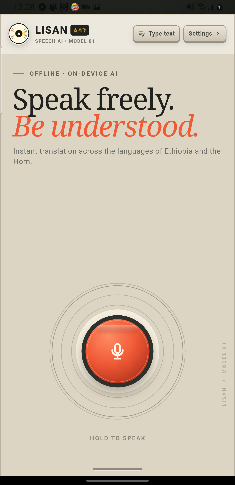

Real-time voice-to-voice conversation across the Horn of Africa. Powered by on-device AI running directly on low-cost smartphones—without needing internet, cellular data, or cloud servers.
Built upon premier African NLP & Open-Source Speech Research
In rural clinics, border posts, and bustling outdoor markets across the Horn of Africa, mobile data is expensive, spotty, or completely unavailable. LISAN is engineered from the ground up to run fully offline without needing cloud servers.
Designed for high-bandwidth cities with permanent fiber and 5G.
Optimized specifically for real everyday life in Ethiopia and the Horn.
Click below to play actual real-world recorded speech, observe LISAN’s automated speech repair healer, and listen to the synthesized translated speech.
"የት አካባቢ ያመዎታል? የደም ምርመራ ያስፈልግዎታል።"
"Eessa kee si dhukkee? Qorannoo dhiigaa si barbaachisa."
Place the phone flat on a consultation table or marketplace stall. LISAN’s interface allows two speakers to communicate naturally, displaying real-time transcribed audio waveforms and synthesized native speech at the push of a button.

From hospital emergency triage to local municipal Kebele offices, LISAN comes pre-equipped with verified bilingual domain glossaries.
Accurate medical triage between physicians and patients across language borders.
Civil registration, birth certificates, and ID issuance without translators on staff.
Haggling, agricultural wholesale trade, and goods transactions in bustling noise.
Remittance claims, microloans, and mobile money transactions made clear.
LISAN doesn’t compromise on accuracy. We engineered deep optimization pipelines to squeeze multi-gigabyte models into a compact on-device runtime.
Smartphone microphones in the field capture stuttering, dropped syllable endings, and conversational contractions. Our pipeline reconstructs clean grammatical text before passing it to translation.
Tier 1: 57.3 MB indexed SQLite FTS5 database for sub-millisecond (≤1ms) lookup of verified idioms, blessings, and civic terms.
Tier 2: CTranslate2 INT8 NLLB-200 neural machine translation for open-ended, complex sentences.
Exported via INT8 dynamic quantization. Runs smoothly on quad-core Android chipsets with 2GB RAM without heating the battery.
Clear, natural speech synthesis is essential for effortless spoken dialogue. LISAN generates expressive vocal inflections calibrated to authentic Amharic, Afaan Oromo, Tigrinya, and Somali prosody using 16kHz VITS neural vocoders.
Evaluated rigorously on standardized parallel test sets across BLEU, chrF++, and conversational accuracy metrics.
Character n-gram F-score evaluated on gold multi-parallel test sets.
Stratified bitext across Amharic, Oromo, Tigrinya, Somali, and English.
≤1ms instant lookup for everyday idioms, clinic terms & greetings.
| Engine / Architecture | Offline Capable | Memory Footprint | Speech Normalizer | Inference Latency |
|---|---|---|---|---|
| LISAN (Our System) | 100% Yes | ~640 MB (INT8 ONNX) | Rule-Based Normalizer | ≤1ms (TM) / ~315ms (NMT) |
| Commercial Cloud API (Google/Azure) | No (Requires 4G/WiFi) | 0 MB (Cloud-only) | Standard Cloud ASR | ~1,800+ ms (Network RTT) |
| Vanilla NLLB-200 (PyTorch FP32) | Heavy (Needs 4GB+ RAM / GPU) | 2.4 GB | None | ~1,200 ms (CPU) |
Download the standalone Android APK or run the open-source backend locally on your workstation. No credit card, no cloud accounts, no tracking.